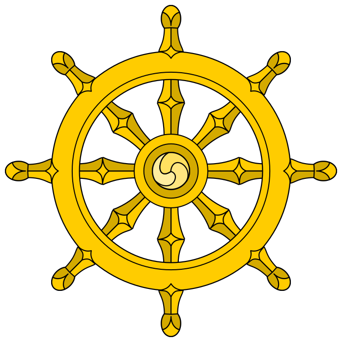
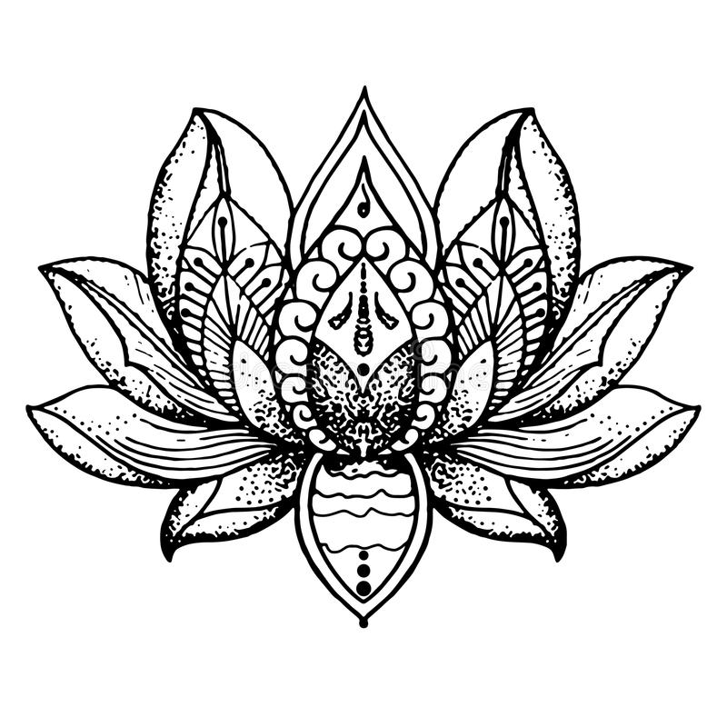
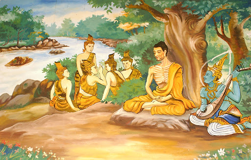
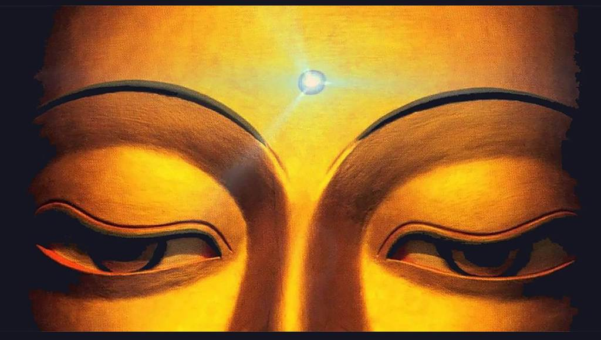
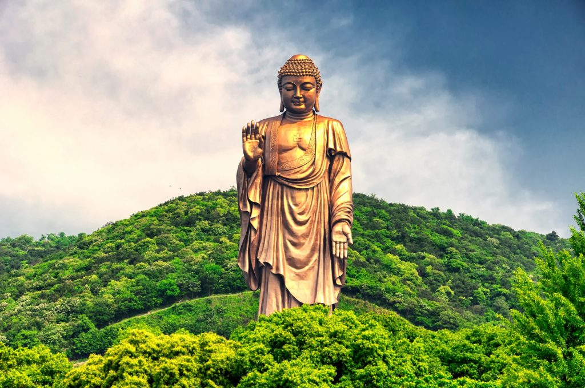

Buddhismus
Eine Religion ohne Gott.
Eine Religion ohne Gott.
Nach Buddha haben Erfahrungen und Geschehnisse ihre Ursachen nicht nur in diesem Leben, sondern auch in früheren Existenzen. Entsprechend wirken Gedanken, Rede und Handlung auch in die Zukunft – das sogenannte Karma-Prinzip. Damit lässt sich auch erklären, warum die inneren und äußeren Umstände der Menschen so unterschiedlich sind. Buddhismus ist eine Religion, unterscheidet sich aber wesentlich von den sogenannten Glaubensreligionen wie Christentum, Judentum oder Islam. Wie auch Hinduismus und Taoismus ist Buddhas Lehre eine Erfahrungsreligion. Ziel ist die Entwicklung des eigenen Geistes, die "Buddha-Natur" zu erlangen. Damit ist gemeint, dass in jedem Menschen die Fähigkeit zur Erleuchtung bereits vorhanden ist. Der Weg dorthin führt über Selbstständigkeit und Eigenverantwortung des Menschen. Im Buddhismus gibt es daher wenig Vorschriften von außen. Buddhas Belehrungen sollen bewusst hinterfragt und durch die eigenen Erfahrung überprüft werden.
 In einem kleinen Ritual nimmt man Zuflucht zu Buddha, Dharma (der Lehre) und Sangha (der spirituellen Gemeinschaft). Sie werden auch die drei Juwelen genannt. Zufluchtnahme bedeutet, den Weg des Buddha zu gehen und seiner Lehre zu folgen. Wir brauchen eine Zuflucht, die außerhalb von Samsara liegt, dem Kreislauf von Tod und Wiedergeburt. Andere Menschen können nie Zuflucht bieten, weil sie selber noch in diesem Kreislauf und ihren Konzepten gefangen sind. In der Regel ist die Zuflucht mit einer Verpflichtung auf die sogenannten fünf Silas verknüpft. Sie lauten:
In einem kleinen Ritual nimmt man Zuflucht zu Buddha, Dharma (der Lehre) und Sangha (der spirituellen Gemeinschaft). Sie werden auch die drei Juwelen genannt. Zufluchtnahme bedeutet, den Weg des Buddha zu gehen und seiner Lehre zu folgen. Wir brauchen eine Zuflucht, die außerhalb von Samsara liegt, dem Kreislauf von Tod und Wiedergeburt. Andere Menschen können nie Zuflucht bieten, weil sie selber noch in diesem Kreislauf und ihren Konzepten gefangen sind. In der Regel ist die Zuflucht mit einer Verpflichtung auf die sogenannten fünf Silas verknüpft. Sie lauten:
1. Kein Lebewesen zu töten oder zu verletzen
2. Nichtgegebenes nicht zu nehmen
3. Keine unheilsamen sexuellen Beziehungen zu pflegen und sich im rechten Umgang mit den Sinnen zu üben
4. Nicht zu lügen oder unheilsam zu reden
5. Das Bewusstsein nicht durch berauschende Mittel zu trüben
Unsere Unwissenheit und das Nichtverstehen der wahren Natur der Dinge ist die Ursache allen Leidens. Aber was verstehen wir nicht? Unser ungeübter Geist ist unfähig wahrzunehmen, dass Seher, Gesehenes und Sehen sich gegenseitig bedingen. Sie existieren nicht unabhängig voneinander und auch nicht alleine aus sich heraus. Buddhas Erklärungen decken sich übrigens mit den Erkenntnissen der Relativitätstheorie und Quantentheorie, nach denen die Eigenschaften der Materie abhängig vom Beobachter ist. Es ist das Dilemma der Subjektivität der Erkenntnis. Durch diese Unwissenheit entsteht die Erfahrung von Dualität. Wir teilen die Welt in "Ich"-Innenwelt und "Du"-Außenwelt. Obwohl die Dinge sich ständig verändern, halten wir an unserer Vorstellung fest, dass sie wirklich, beständig und von uns getrennt sind.
Das Rad des Dharma. Das Rad des Dharma ist auch als Rad des Lebens oder Dharma-Chakra bekannt. Es repräsentiert den edlen achtfachen Pfad, den der Buddha seinen Schülern gelehrt hat. Der edle achtfache Pfad ist eine Anleitung, wie sie die Erleuchtung, das Nirwana, erlangen und letztlich die Befreiung aus dem Zyklus von Wiedergeburten und den Eintritt in das Para-Nirwana. Das Dharma-Rad ist mittlerweile zum universellen Symbol für den Buddhismus geworden. Das Rad des Lebens hat acht Speichen, die den edlen achtfachen Pfad des Buddha darstellen. In Tibet wird es auch als Rad der Transformation bezeichnet.
 Der Ewige Knoten. Die Verflechtung von Linien im ewigen Knoten, auch unendlicher Knoten genannt, hat weder ein Anfang noch ein Ende. Er symbolisiert die Unendlichkeit Buddhas Weisheit und Mitgefühl. Außerdem stellt er sinnbildlich dar, dass die materielle und die spirituelle Welt untrennbar miteinander verbunden sind. Dieser Knoten ist nicht nur ein Symbol für die Verbindung zwischen Diesseits und Jenseits, sondern auch für die Beziehung zwischen uns Menschen. Er erinnert uns daran, dass wir keine isolierten Einzelkämpfer, sondern Teil des Ganzen sind. Der ewige Knoten wird auch verwendet, um zu zeigen, dass die spirituelle Praxis nicht vom weltlichen Leben zu trennen ist und Weisheit und Mitgefühl miteinander einhergehen.
Der Ewige Knoten. Die Verflechtung von Linien im ewigen Knoten, auch unendlicher Knoten genannt, hat weder ein Anfang noch ein Ende. Er symbolisiert die Unendlichkeit Buddhas Weisheit und Mitgefühl. Außerdem stellt er sinnbildlich dar, dass die materielle und die spirituelle Welt untrennbar miteinander verbunden sind. Dieser Knoten ist nicht nur ein Symbol für die Verbindung zwischen Diesseits und Jenseits, sondern auch für die Beziehung zwischen uns Menschen. Er erinnert uns daran, dass wir keine isolierten Einzelkämpfer, sondern Teil des Ganzen sind. Der ewige Knoten wird auch verwendet, um zu zeigen, dass die spirituelle Praxis nicht vom weltlichen Leben zu trennen ist und Weisheit und Mitgefühl miteinander einhergehen.
Die Lotusblume. Die Lotusblume repräsentiert die ursprüngliche Reinheit des Körpers, der Sprache und des Geistes. Die Blüte schwebt über dem trüben Wasser und wurzelt im schlammigen Boden, welcher negative Emotionen wie Anhaftung und Verlangen repräsentiert. Die Lotusblume wird in vielen Lehren des Buddhismus verwendet, um die wahre Natur der Menschheit darzustellen. Die Wurzeln des Lotos stecken tief im Schlamm, die Pflanze wächst in trübem Wasser und an der Wasseroberfläche blüht schließlich eine zarte Blüte mit einem angenehm süßlichen Duft. Der Lotus veranschaulicht die Art und Weise, wie wir spirituell wachsen und uns allmählich über unser Leiden erheben, um Erleuchtung, Schönheit und Klarheit zu erlangen. Die Lotusblüte gibt es in verschiedenen Farben, die jeweils verschiedene Bedeutungen haben. Ein rosaroter Lotus repräsentiert den traditionellen Buddha. Purpur steht für Mystik, Rot für Liebe und Mitgefühl, und Blau für Weisheit. Ein weißer Lotus symbolisiert Spiritualität und einen klaren Geist.
Der Bodhi-Baum. Der Bodhi-Baum symbolisiert den ursprünglichen Baum in Bodh Gaya in Indien, wo Siddhartha Gautama sich einst hinsetzte, um zu meditieren, bis er die Erleuchtung erlangte und zum Buddha wurde. Er repräsentiert die Hingabe und Entschlossenheit zur meditativen Versenkung, mit der Buddhisten die Erleuchtung erreichen können. Ein Nachkömmling dieses originalen Bodhi-Baums steht noch heute in Bodh Gaya. Viele Mönche und Reisende kommen ihn besuchen, um in seinem Schatten zu meditieren und sich inspirieren zu lassen.
Die Augen Budhhas. Die Augen des Buddhas werden auch als „Augen der Weisheit" bezeichnet und sind oft auf den Seiten von Stupas, buddhistischen Schreinen, zu finden. Diese Augen Buddhas sind ein Symbol für die Präsenz des göttlichen Bewusstseins in allem, was existiert. Die Wellenlinie in der Mitte der Augen ist das Sanskrit-Symbol für die Zahl 1 und symbolisiert die Einheit aller Dinge. Der Punkt zwischen den beiden Augen ist das dritte Auge und symbolisiert wahres spirituelles Erwachen.
Der Buddha. Siddharta Gautama selbst wollte keine Abbilder von sich haben. Der Buddha, wie wir ihn alle kennen, ist kein Symbol für die Anbetung. Denn Buddha ist kein Gott, sondern ein Mensch, der durch den achtfachen edlen Pfad die Erleuchtung erlangt hat. Bilder und Figuren des Buddha sollen nicht zum Götzendienst einladen, sondern uns an das Potenzial der Erleuchtung und der Buddhaschaft erinnern, das in jedem von uns existiert. Viele Buddhisten tragen Armbänder oder Halsketten mit buddhistischen Symbolen am Körper oder stellen Figuren und Symbole in ihrem Wohnraum auf, um im Alltag an die tiefe spirituelle Bedeutung dieser Symbole erinnert zu werden. Jetzt kennst auch du einige der Symbole des Buddhismus und kannst dir sicherlich leicht merken, für was sie stehen.
Falls du mehr über das Thema: Buddhismus erfahren willst, kannst du weiter das Internet durchstöbern oder aber hier eine Zusammenfassung auf YouTube anschauen. Wenn dir diese Website gefallen hat, kannst du mir gerne ein Feedback auf den Social Media Kanälen geben.
Icons erstellt von Freepik from www.flaticon.com